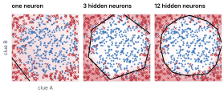
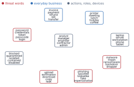
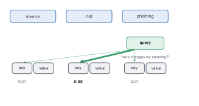
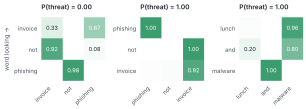
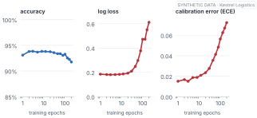

Any sufficiently advanced technology is indistinguishable from magic.
— Arthur C. Clarke, Profiles of the Future, 1973
“Deep learning” might be the most intimidating phrase in the field. It sounds like something between neuroscience and magic.
So here’s some good news to start with:
You’ve already built one.
The logistic regression from Chapter 2 is a single artificial neuron. A deep network is many of them, stacked in layers and trained with the same downhill walk. Add two more ideas, a way to turn words into meaningful numbers and a way for words to look at each other, and you have the machinery inside every LLM.
This chapter is a fast tour, not a course. You need four ideas from it, and each is smaller than it sounds.
By the end of this chapter
See why one neuron can only draw a straight line, and how layers and a simple “hinge” let a network draw almost any shape.
Explain how an embedding turns words into points where closeness means similar meaning.
Describe attention as each word asking which other words matter to it.
Explain why big models trained for long tend to become overconfident, and how to fix it.
5.1 Idea one: layers bend the line
Look at what a neuron does to an alert: multiply each clue by a weight, add everything up, squash the total into a probability. The places where a weighted sum equals some value form a straight line. So all a single neuron can do is cut the space in two with a straight edge.
That’s a real limit. Imagine behaviour that’s suspicious when it’s unusual in any direction: far too much activity, or far too little, far too early, or far too late. Normal sits in the middle, and no straight line separates the middle from the edges.

Figure 5.1: A toy problem. Blue dots are normal activity; red dots surround them on every side. One neuron (left) can only draw a straight line through it. With a hidden layer of three neurons (middle) the boundary becomes a triangle; with twelve (right), close to a circle.
The fix is to send the clues to a few neurons first, each drawing its own line, and let an output neuron combine their answers. Three straight edges make a triangle. Twelve make something close to a circle (Figure fig-line-limit), and the log loss drops from 0.64 to 0.30. The layers in between are hidden, and a network with several of them is deep. That’s all “deep” means.
One detail makes it work. A weighted sum of weighted sums is still a weighted sum, so each hidden neuron applies a bend before passing its answer on. The popular bend is almost embarrassingly simple: if the sum is negative, output zero; otherwise pass it through. It’s called ReLU, and it’s a hinge. Enough hinges, added together, can trace almost any curve.
Training works the same way as before, rolling downhill on log loss. The only new problem is finding the slope for a weight buried several layers deep, and the answer, backpropagation, is easiest to picture as blame (Rumelhart et al. 1986). The error at the output is shared back through the network, each layer passing blame to the one before in proportion to how much each weight contributed.
Weighted sums draw lines. Hinges bend them. Layers combine the bends.
Here’s why depth matters in practice. On photos, the first layers of a trained network learn to detect edges, later ones textures and shapes, the last ones whole objects (LeCun et al. 2015). Nobody wrote a rule for “edge”. A deep network takes raw input, pixels or characters, and learns its own clues.
On Kestrel’s neat, hand-made features, though, it has nothing to find. A small network ties logistic regression, log loss 0.180 against 0.175. A big one trained too long gets worse: 0.511.
Deep networks earn their keep on raw, messy input. On neat features, start simple.
5.2 Idea two: meaning as geometry
A network does arithmetic, so every word has to become a number. Number the words, “invoice” is 101 and “bill” is 102, and the maths takes the numbers literally: “bill” becomes halfway between “invoice” and “lunch”. Give every word its own slot instead, and every word is exactly as different from every other. Neither representation knows anything.
The fix came from linguistics, decades before deep learning.
You shall know a word by the company it keeps!
— J. R. Firth, A Synopsis of Linguistic Theory, 1957
“phishing” and “spoofed” rarely appear in the same sentence. But they appear in the same kinds of places, next to “email”, before “asked”, near “password”. Count, for every word, which words turn up near it, and squash those counts into a short list of numbers. Words used in similar ways end up with similar lists. That list is an embedding.

Figure 5.2: Word vectors learned from 30,000 synthetic analyst notes, with similar vectors placed close together. Each card is a family of words the method discovered on its own, from context alone: kinds of lure, kinds of malware, kinds of secret.
Nobody told the method that “trojan”, “ransomware” and “backdoor” belong together. It found out (Figure fig-word-map). Closeness is measured by the angle between two word vectors, called cosine similarity: about 1 when they point the same way, about 0 when they’re unrelated.
Try it
vocab, vectors, counts = text.note_vectors()v = {w: vectors[vocab.index(w)] for w in vocab}cos =lambda a, b: v[a] @ v[b] / np.linalg.norm(v[a]) / np.linalg.norm(v[b])for a, b in [("invoice", "bill"), ("invoice", "trojan"), ("phishing", "spoofed")]:print(f"{a:>9} vs {b:<8}{cos(a, b):+.2f}")
invoice vs bill +1.00
invoice vs trojan +0.01
phishing vs spoofed +1.00
The same trick works for whole alerts: similar alerts land near each other, which lets an analyst ask “show me past alerts like this one”. It’s also the engine inside RAG (Chapter 7). But it has a blind spot worth remembering. Finding Kestrel’s 50 most similar past alerts by text and counting the attacks gives an honest probability, with a calibration error of 0.015, and a blunt one: AUC 0.68, against 0.89 for logistic regression on the fields. Two “large upload” alerts look identical to an embedding whether the threat-intel score is 0.05 or 0.95.
Embeddings capture what things are about. They’re poor at the exact numbers inside them.
5.3 Idea three: words that look at each other
One vector per word still isn’t enough. “invoice, not phishing” is an analyst clearing an alert; “phishing, not invoice” is an analyst raising one. Same three words. A model that only knows which words appear sees two identical notes.
Attention fixes this, and the core idea fits in a sentence: every word asks which other words should change its meaning, and listens to them in proportion.

Figure 5.3: The word “phishing” asks a question (the query), compares it with each word’s label (key), turns the matches into weights that sum to 1, and takes that mix of their contents (values). In the trained model, it looks almost entirely at “not”.
Each word makes three vectors from its own: a query (“what am I looking for?”), a key (“what can I tell you about?”) and a value (what it passes on). Compare every query with every key, turn the scores into weights that add up to 1 with a softmax, and take the weighted mix of values (Figure fig-qkv). That’s the Q, K and V from the scary diagrams.
def softmax(s): e = np.exp(s - s.max(-1, keepdims=True))return e / e.sum(-1, keepdims=True)def self_attention(H, Wq, Wk, Wv): Q, K, V = H @ Wq, H @ Wk, H @ Wv weights = softmax(Q @ K.T / np.sqrt(K.shape[1]))return weights @ V, weights
Train one attention layer on 4,000 tiny notes where “not” flips the meaning, and a bag of words tops out at 84% while attention reaches 100%. Look inside, and you find what it learned.

Figure 5.4: What each word attends to after training. In “invoice not phishing”, the word “phishing” puts nearly all its attention on “not”. Nobody told the model about negation; it found that looking at the word before was the cheapest way to get the answers right.
A transformer is this idea repeated and polished: attention, then a small network on each word, stacked dozens of times (Vaswani et al. 2017). It took over because attention looks at every pair of words at once, so it runs in parallel on graphics chips and can use enormous hardware. One more distinction matters for this book. A reader (encoder) lets every word see the whole input, which is what you want for understanding and deciding. A writer (decoder) lets each word see only the words before it, which is what you need for generating text, because when you’re writing word five, word six doesn’t exist yet. LLMs are writers.
5.4 Idea four: scale, and a side effect
How did attention stacked up turn into something that writes essays? Mostly, it got bigger, trained on a task that needs no labels: take any text, hide the next word, and guess it. Every sentence ever written becomes free training data. To get good at the guessing, a model has to learn grammar, facts and a surprising amount of reasoning. This is pretraining, and researchers found its loss falls smoothly and predictably as models, data and computing power grow (Kaplan et al. 2020).
The biggest lesson that can be read from 70 years of AI research is that general methods that leverage computation are ultimately the most effective, and by a large margin.
— Richard Sutton, The Bitter Lesson, 2019
Two more stages turn a text predictor into an assistant: instruction tuning, on examples of good answers, and preference tuning, where the model learns the answers people prefer (Ouyang et al. 2022). People tend to prefer answers that sound sure. OpenAI’s own report on GPT-4 showed the pretrained model’s confidence was well calibrated and, after preference tuning, noticeably less so (OpenAI 2023).
There’s a deeper version of this effect, and you can watch it happen on Kestrel’s alerts. Train a network much bigger than the job needs, for a long time, and check it on test alerts.

Figure 5.5: The same training run, on test alerts. Accuracy (left) barely moves. Log loss (middle) and calibration error (right) are flat for a while, then climb steeply. Watch only accuracy and you’d never notice.
Accuracy barely changed. Meanwhile the test log loss went from 0.18 to 0.61, and the calibration error from 0.019 to 0.072 (Figure fig-overtraining). The model’s ranking of alerts held up. Its honesty fell apart.
The mechanism follows from Chapter 2. Once a model gets most training examples right, the only way left to lower log loss is to push correct answers closer to certainty: 0.95, then 0.99, then 0.999. A flexible model trained long enough becomes certain of everything it saw, including the noise, and carries that certainty onto new cases where it hasn’t earned it. Deeper, wider modern networks show exactly this (Guo et al. 2017).
Flexible models trained to squeeze out the last drop of training loss learn to be certain.
The fixes are ones you’ve already met in Chapters 2 and 3, and they’re simple. Stop training when the loss on held-out data stops improving; here that was around epoch 3. And correct the probabilities afterwards on data the model never saw: a single “temperature” cut the calibration error from 0.072 to 0.046. A correction can make the numbers honest again. It can’t give back what the model threw away by memorising.
Where this breaks
Networks need lots of data, and with too little they memorise. They’re hard to read: no tidy “×2.9 for a new country”. Embeddings inherit the associations in their training text, including stereotypes (Bolukbasi et al. 2016), and they’re bad at negation, since “malicious” and “not malicious” keep almost the same company. Attention maps are tempting to read as explanations; in large models they often aren’t (Jain and Wallace 2019). And you usually can’t retrain someone else’s big model, or even see its raw probabilities, which is one reason a decision model that returns probabilities as its main output, and gets tested, matters so much.
Set the threshold
Your team swaps Kestrel’s logistic regression for a big network because its training loss is lower, and keeps the same line: alerts below P = 0.03 close automatically. Will more or fewer real threats be closed without a human?
(More. The big network is overconfident: many alerts it pushes near zero aren’t really that safe. The line assumed honest probabilities. Recalibrate first and re-check the line, or keep the simpler model.)
5.5 Where we are
A neuron could only draw straight lines, so we stacked neurons in layers and gave each a hinge. Words needed to become numbers with meaning, so we placed them by the company they keep. One vector per word couldn’t tell “not phishing” from “phishing”, so we let words look at each other, and attention learned negation on its own. Scaled up and trained to guess the next word, that machinery became the LLM, with a side effect: flexible models trained long enough become sure of themselves, and accuracy hides it.
You don’t need to remember every detail. You need the last one most of all.
Why does a network with no hinges collapse to a single straight line, however many layers it has?
In the lab, compare the cosine similarity of “upload” and “download”. Why aren’t they identical, even though they look like near-synonyms?
In your own words, and without the letters Q, K or V, explain what attention does for “phishing” in “invoice not phishing”.
A vendor’s classifier is “97% accurate” and returns a confidence with every prediction. You plan to act automatically above 0.9. What would you ask for before agreeing?
Next: what does an LLM actually do when it writes? One token at a time, with a probability for every possible next piece, and that detail matters a great deal for decisions.
Bolukbasi, Tolga, Kai-Wei Chang, James Zou, Venkatesh Saligrama, and Adam Kalai. 2016. ‘Man Is to Computer Programmer as Woman Is to Homemaker? Debiasing Word Embeddings’. Advances in Neural Information Processing Systems 29 (NeurIPS).
Guo, Chuan, Geoff Pleiss, Yu Sun, and Kilian Q. Weinberger. 2017. ‘On Calibration of Modern Neural Networks’. Proceedings of the 34th International Conference on Machine Learning (ICML).
Jain, Sarthak, and Byron C. Wallace. 2019. ‘Attention Is Not Explanation’. Proceedings of NAACL-HLT, 3543–56.
Kaplan, Jared, Sam McCandlish, Tom Henighan, et al. 2020. Scaling Laws for Neural Language Models. https://arxiv.org/abs/2001.08361.
Ouyang, Long, Jeff Wu, Xu Jiang, et al. 2022. ‘Training Language Models to Follow Instructions with Human Feedback’. Advances in Neural Information Processing Systems 35 (NeurIPS).
Rumelhart, David E., Geoffrey E. Hinton, and Ronald J. Williams. 1986. ‘Learning Representations by Back-Propagating Errors’. Nature 323: 533–36.
Vaswani, Ashish, Noam Shazeer, Niki Parmar, et al. 2017. ‘Attention Is All You Need’. Advances in Neural Information Processing Systems 30 (NeurIPS).